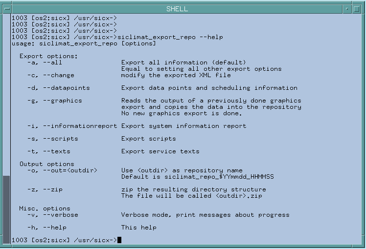

Exporting SICLIMAT X Data
- You have prepared graphics for export.
- Log on to the console as the sicx user.
- Do one of the following:
- Run the siclimat_export_repo script, to create an export repository.
- Run the siclimat_export_repo-change, to create an export repository and to change the Siclimat X technological objectname with the object username in the export, so during the import in Desigo CC the Siclimat X object username is used to build up the hierarchy of the logical view and not the technological objectname.
- Run the siclimat_export_repo --zip script, to create a zip archive which contains the export repository.
- An export repository with all export files (data points, graphics, scripts, service tests, system information report) is created. The directory name has the format sicx_repo_<date>_<time>.
- (Optional) Run the siclimat_export_repo script with the --help option, to see all options.
